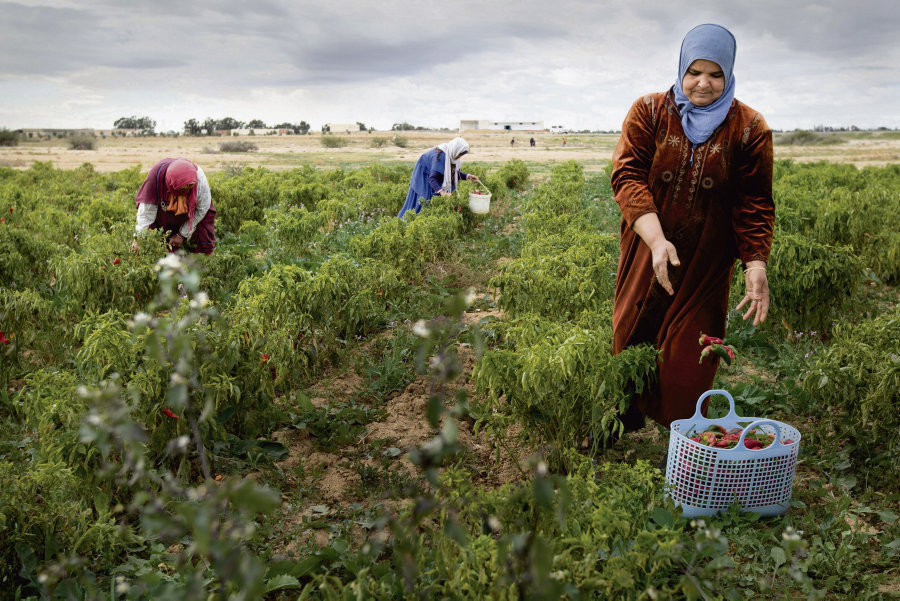
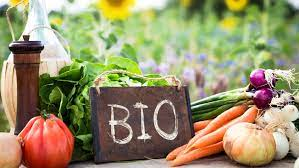

Projet Agro-Tunisie « Agriculture et Biodiversité »
Le site www.agro-Tunisie.com propose des supports pédagogiques ainsi que des bonnes pratiques pour la promotion d’une agriculture durable en Tunisie. Ce site Internet s’adresse avant tout aux formateurs, conseillers et coaches agricoles, responsable environnement et forestier. Les agriculteurs, jeunes promoteurs et autres acteurs en milieu rural intéressés par le développement agricole durable sont aussi invités à utiliser le site «Agro-Tunisie ».
 "
"